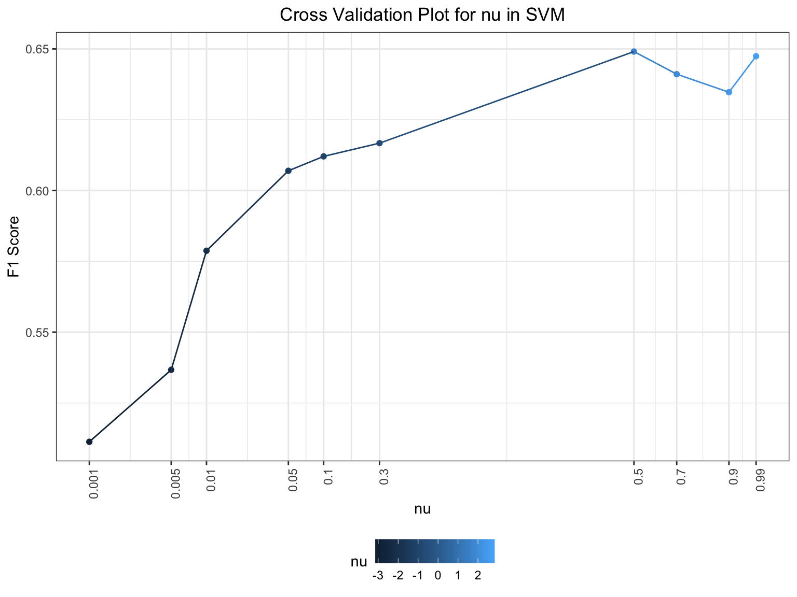

ufo_data = read_csv(file = "./data/tidied_data_final.csv")## Parsed with column specification:
## cols(
## latitude = col_double(),
## longitude = col_double(),
## city_description = col_character(),
## ufo_shape = col_character(),
## encounter_length = col_double(),
## described_encounter_length = col_character(),
## description = col_character(),
## date_documented = col_character(),
## country = col_character(),
## state = col_character(),
## city = col_character(),
## X12 = col_logical(),
## date = col_character(),
## time = col_time(format = "")
## )ufo =
ufo_data %>%
filter(country == "USA") %>%
#na.omit(ufo_data) %>%
#separate(date_time, into = c( "date","time"), sep = " " ) %>%
separate(date, into = c("month","day","year"), sep = "/") %>%
separate(time, into = c("hour","minute"), sep = ":") %>%
select(year, month, day, hour, minute,state, city) %>%
na.omit(ufo_data) %>%
mutate(add = paste(state, city)) %>%
mutate(month = as.factor(month.name[as.numeric(month)]), year = as.numeric(year), hour = as.numeric(hour), minute = as.numeric(minute), day = as.numeric(day)) #%>%
#mutate(month = as.factor(month.name[as.numeric(month)]), year = as.numeric(year), hour = as.numeric(hour), minute = as.numeric(minute), day = as.numeric(day), state = as.factor(state), city = as.factor(city)) %>%
#select(-city, -state)# %>%
#as.data.frame()
# mutate(ufo_indentification = as.factor(T)) #%>%
ufo_city =
ufo %>%
dplyr::group_by(add) %>%
mutate(count = dplyr::n()) %>%
filter(count > 100) %>%
ungroup() %>%
select(-count) %>%
select(-state, -city) %>%
mutate(add = as.factor(add))
#library(GGally)
#ggpairs(ufo,
# columns = c("year", "month", "day", "hour", "minute"),#c("mfr", "fat", "calories", "sodium", "sugars"),
#ggplot2::aes(colour = state)
#)
nu_cv = tibble(
nu = numeric(),
f1_svm = list(),
label = list(),
pred_label = list()
)
factor_variable_cope = function(df){
if (is.tibble(df)) {
df = as.data.frame(df)
}
for (i in colnames(df[, sapply(df, is.factor)])) {
for (level in unique(df[, i])) {
df[paste(i, level, sep = "_")] =
as.integer(ifelse(df[, i] == level, 1, -1))
}
}
df
}
for (nu_ in c(0.001, 0.005, 0.01, 0.05, 0.1, 0.3, 0.5, 0.7, 0.9, 0.99)) {
false_samples = 5000
false_data = tibble(
year = sample(1900:2100, false_samples, replace = T),
month = sample(ufo_city$month, false_samples, replace = T),
day = sample(1:30, false_samples, replace = T),
hour = sample(0:24, false_samples, replace = T),
minute = sample(ufo_city$minute, false_samples, replace = T),
add = sample(ufo_city$add, false_samples, replace = T)
) %>%
anti_join(ufo_city, by = c("year", "month", "day", "hour", "minute", "add"))# %>%
#factor_variable_cope() %>%
#select(-month, -add) %>%
#mutate(year = as.integer(year), day = as.integer(day), hour = as.integer(hour), minute = as.integer(minute))
false_n = nrow(false_data)
true_n = nrow(ufo_city)
train_df =
ufo_city %>%
bind_rows(false_data) %>%
factor_variable_cope() %>%
select(-month, -add) %>%
mutate(year = as.integer(year), day = as.integer(day), hour = as.integer(hour), minute = as.integer(minute)) %>%
sample_frac(1)
false_df =
train_df %>%
slice((true_n + 1):(true_n + false_n)) %>%
mutate(y = FALSE) %>%
as_tibble()
cv_df =
crossv_mc(train_df, 10) %>%
mutate(
train = map(train, as_tibble),
test = map(test, as_tibble)#,
#test = bind_rows(test, false_df) # add false samples
)
for (i in 1:nrow(cv_df)) {
cv_df$test[[i]] = mutate(cv_df$test[[i]], y = TRUE)
cv_df$test[[i]] = rbind(cv_df$test[[i]], false_df)
cv_df$label[[i]] = cv_df$test[[i]]$y
cv_df$test[[i]] = select(cv_df$test[[i]], -y)
}
cv_model =
cv_df %>%
mutate(svm_mod = map(train, ~svm(.x , y = NULL,
type = 'one-classification',
nu = nu_,
scale = TRUE,
kernel = "linear"))) %>%
mutate(pred_label = map2(svm_mod, test, ~predict(.x, .y)))
cv_f1 =
cv_model %>%
mutate(f1_svm = map2_dbl(.x = label, .y = pred_label, ~F1_Score(y_true = .x, y_pred = .y)))
nu_cv =
tibble(
nu = nu_,
f1_svm = mean(pull(cv_f1, f1_svm))
#label = nest(as_tibble(pull(cv_model, label))),
#pred_label = nest(as_tibble(pull(cv_model, pred_label))),
) %>%
#slice(1) %>%
rbind(nu_cv, .)
}cvp =
nu_cv %>%
mutate(nu = case_when(
nu <= 0.3 ~ log10(nu),
nu > 0.3 ~ exp(nu)
))
cvp %>%
ggplot(aes(x = nu, y = f1_svm, color = nu)) +
geom_point() +
geom_line() +
scale_x_continuous(
breaks = pull(cvp, nu),
labels = c("0.001", "0.005", "0.01", "0.05", "0.1", "0.3", "0.5", "0.7", "0.9", "0.99")
) +
labs(
title = "Cross Validation Plot for nu in SVM",
x = "nu",
y = "F1 Score") +
theme(plot.title = element_text(hjust = 0.5)) +
theme(axis.text.x = element_text(angle = 90, hjust = 1))
nu_ = 0.5
svm_model =
ufo_city %>%
bind_rows(false_data) %>%
factor_variable_cope() %>%
select(-month, -add) %>%
mutate(year = as.integer(year), day = as.integer(day), hour = as.integer(hour), minute = as.integer(minute)) %>%
sample_frac(1) %>%
svm(y = NULL,
type = 'one-classification',
nu = nu_,
scale = TRUE,
kernel = "linear")
svm_model##
## Call:
## svm.default(x = ., y = NULL, scale = TRUE, type = "one-classification",
## kernel = "linear", nu = nu_)
##
##
## Parameters:
## SVM-Type: one-classification
## SVM-Kernel: linear
## gamma: 0.01587302
## nu: 0.5
##
## Number of Support Vectors: 7083